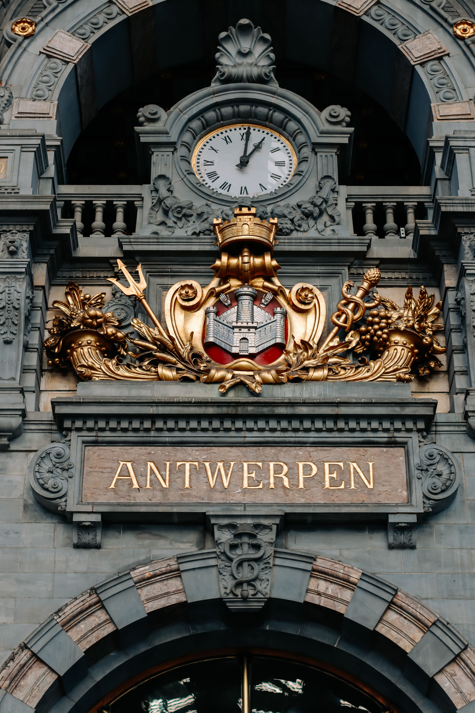
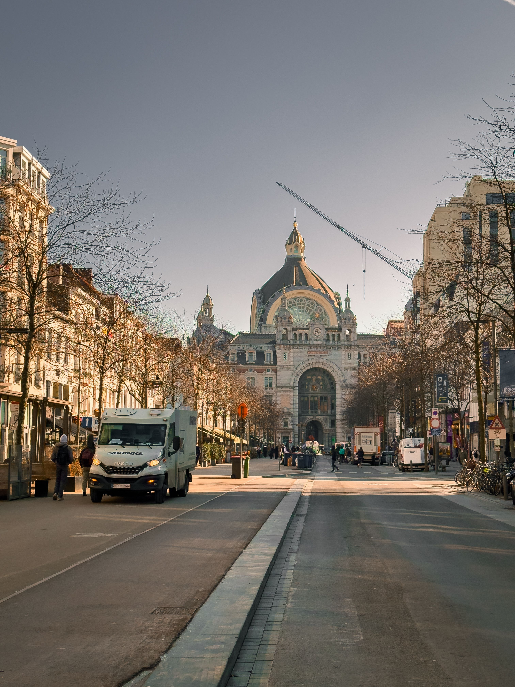

Antwerp is Belgium's most underrated destination. It's not as immediately picturesque as Bruges, nor as cosmopolitan as Brussels, but it has something deeper — genuine Flemish character, world-class art and architecture, and a working port atmosphere that feels alive and real.
Most visitors day trip from Brussels and miss the point. Antwerp doesn't announce itself — you have to stay, explore, and let it reveal itself.
The Cathedral of Our Lady is a UNESCO Gothic masterpiece. Inside are paintings by Peter Paul Rubens, Antwerp's most famous son. Rubens lived and worked here for most of his life, his house-museum is filled with his works, and standing in the cathedral surrounded by his paintings gives genuine insight into why Antwerp mattered artistically.

The port has shaped Antwerp for centuries. The Scheldt River and Europe's second-largest port give the city genuine working-class character. Walk along the waterfront and you feel history — shipping containers, historic buildings, industrial beauty mixing with culture. This is not a theme park version of a port; it's how Antwerp actually functions.
The diamond district (around Hoveniersstraat) is where the world's diamonds are traded and cut. It's a functioning working area, not a tourist attraction. Walk through and you'll see traders and dealers at work. Some showrooms welcome visitors, but this is serious business, not tourism.
Fashion and galleries drive modern Antwerp. The city attracts innovative designers, hosts twice-yearly fashion weeks, and has galleries and boutiques selling work you won't find elsewhere. There's creative energy alongside the historical weight.
Even the Central Station is worth noting — a 1905 architectural masterpiece that sets the tone the moment you arrive.

Antwerp gets under your skin differently than other Belgium cities. It's more industrial, more Flemish, less designed-for-tourists. That's exactly why it's worth visiting.
From Brussels: Train is easiest. 45 minutes from Brussels Central to Antwerp Central, trains every 15-30 minutes, €9-15. The Central Station itself is beautiful.
Within Antwerp: Most sights are walkable from the centre or tram-accessible. €2.50 single ticket, €18 for 10. You won't need much transport if staying central.
Budget: €25-45/night hostels (mostly centre). Mid-range: €60-110/night hotels in Stadt Centre or Zuid neighbourhoods. Luxury: €130+/night boutique hotels.
Stay in the centre or Zuid for balance of location and local atmosphere. The city is compact.
Spring (April–May) and autumn (September–October) are ideal — mild weather, pleasant for walking. Summer is warm but crowded. Fashion week is twice yearly (January and September) if interested in design. Belgian weather is changeable year-round — pack layers.
Food: €8-15 street food, €15-30 casual meals, €40+ fine dining. Drinks: €3-5 beer, €2-3 coffee. Attractions: €8-15 (Cathedral €8, Rubens' House €12-15, MAS Museum €13). Total budget: €50-90/day per person. Slightly less expensive than Brussels.
Cathedral of Our Lady (€8, Gothic masterpiece with Rubens paintings) — essential. Rubens' House Museum (€12-15) — his actual home and studio. Central Station — architectural marvel, free. Scheldt waterfront — walk along the river, free. MAS Museum (€13) — port history. Diamond district — free to walk through (Hoveniersstraat area). Fashion boutiques and galleries throughout the city.
Drive around Antwerp's streets, cathedral and waterfront from home before you visit.
🚗 Drive Through Antwerp NowDisclosure: These are affiliate links. If you book through them we may earn a small commission at no extra cost to you.
Disclosure: If you book through these links we may earn a small commission at no extra cost to you.